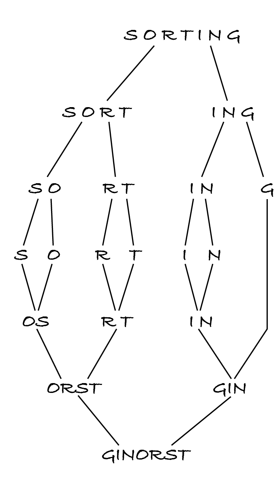

14.5. Merge sort
Let’s now look at a divide-and-conquer approach to sorting.
14.5.1. Algorithm
Merge sort divides the sequence into two halves, sorts each one recursively, and merges them by taking the smallest item of each half until both are empty. The bases cases are sequences of length 0 or 1, as they can’t be split into smaller sequences. When the length is odd, it doesn’t matter which half has one element more. The next figure shows the process applied to our familiar example.
Here’s the recursive algorithm for mergesort(unsorted, key):
if n < 2:
let sorted be unsorted
otherwise:
let middle be floor(n / 2)
let left sorted be mergesort(unsorted[0:middle], key)
let right sorted be mergesort(unsorted[middle:n], key)
let sorted be merge(left sorted, right sorted, key)
The previous M269 team produced a visualisation of step 2.4, so that you can see it in more detail. The code shown in the visualisation doesn’t use a key function. Here’s the algorithm for merge(left, right, key) with the precondition that both input sequences are sorted.
let left index be 0
let right index be 0
let sorted be the empty sequence
while left index < │left sorted│ and right index < │right sorted│:
let left item be left sorted[left index]
let right item be right sorted[right index]
if key(left item) < key(right item):
append left item to sorted
let left index be left index + 1
otherwise:
append right item to sorted
let right index be right index + 1
for index from left index to │left sorted│ – 1:
append left sorted[index] to sorted
for index from right index to │right sorted│ – 1:
append right sorted[index] to sorted
Step 4 and its sub-steps merge both sequences until one is copied to the output. The unprocessed items in the other half are then copied by either step 5 or step 6. Only one of those for-loops will execute.
14.5.2. Complexity
Let’s first obtain the complexity in a visual way. In the above figure, each level splits sequences in half and a later corresponding level merges the sorted halves. Each splitting and merging corresponds to one recursive call. Since the input is always split in half, there are \(\log_2\) n recursive calls until the sequences have length 1 and start being merged. In the example, n = 7, so there are 3 recursive call levels.
Each level processes the whole input, of length n, albeit split in substrings. For example, the second level processes 4 sequences of one or two characters each, while the third level processes seven sequences of one character each. Processing each character takes constant time, both when it’s being copied from the input to an unsorted half and when it’s copied from a sorted half to the output. The complexity is therefore log n × n × Θ(1) = Θ(n log n).
Informal reasoning can sometimes have subtle flaws, so it’s safest to systematically define the complexity recursively, following the algorithm.
Exercise 14.5.1
Write the recursive definition of T and confirm that merge sort has log-linear complexity.
if n < 2: T(n) = …
if n ≥ 2: T(n) = …
Merge sort has two advantages over insertion and selection sort: it has better than quadratic complexity for unsorted input sequences and, being a divide-and-conquer algorithm, can be implemented in parallel.
14.5.3. Code and performance
[1]:
from typing import Callable
from algoesup import test
%run -i ../m269_sorting
def merge(left: list, right: list, key: Callable) -> list:
"""Merge both lists into one with keys in non-decreasing order.
Preconditions: left and right have keys in non-decreasing order
"""
left_index = 0
right_index = 0
result = []
while left_index < len(left) and right_index < len(right):
left_item = left[left_index]
right_item = right[right_index]
if key(left_item) < key(right_item):
result.append(left_item)
left_index = left_index + 1
else:
result.append(right_item)
right_index = right_index + 1
for index in range(left_index, len(left)):
result.append(left[index])
for index in range(right_index, len(right)):
result.append(right[index])
return result
def merge_sorted(unsorted: list, key: Callable) -> list:
"""Return a permutation with keys in non-decreasing order.
Preconditions: for any indices i and j,
key(unsorted[i]) and key(unsorted[j]) are comparable
"""
n = len(unsorted)
if n < 2:
return unsorted
else:
middle = n // 2
left_sorted = merge_sorted(unsorted[:middle], key)
right_sorted = merge_sorted(unsorted[middle:], key)
return merge(left_sorted, right_sorted, key)
test(merge_sorted, sorting_tests)
Testing merge_sorted...
Tests finished: 7 passed (100%), 0 failed.
Remember that the start and end indices of a slice can be omitted.
Since the complexity is always the same, I measure the run-time for sequences that are easy to generate.
[2]:
for doubling in range(5):
items = [0] * 100 * 2**doubling # 100, 200, 400, ... zeros
%timeit -r 5 merge_sorted(items, identity)
73.8 μs ± 86.7 ns per loop (mean ± std. dev. of 5 runs, 10,000 loops each)
160 μs ± 606 ns per loop (mean ± std. dev. of 5 runs, 10,000 loops each)
340 μs ± 262 ns per loop (mean ± std. dev. of 5 runs, 1,000 loops each)
730 μs ± 1.33 μs per loop (mean ± std. dev. of 5 runs, 1,000 loops each)
1.58 ms ± 5.65 μs per loop (mean ± std. dev. of 5 runs, 1,000 loops each)
The run-times more than double but don’t quadruple when the input size doubles. This confirms the complexity is between linear and quadratic.